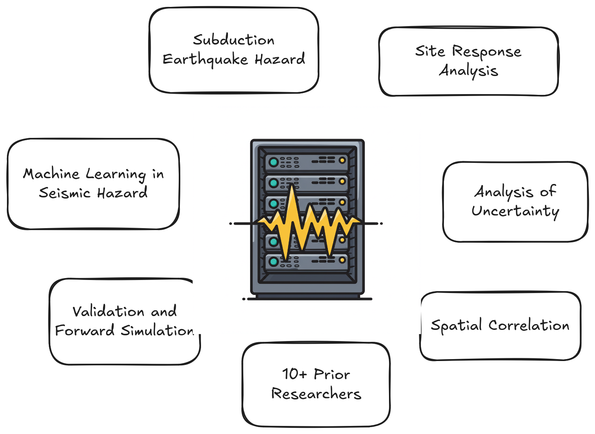
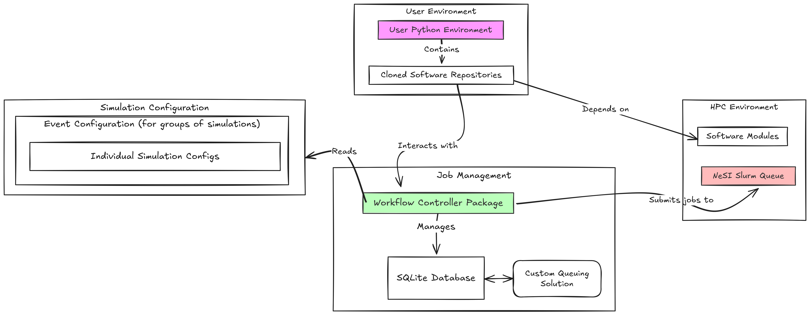
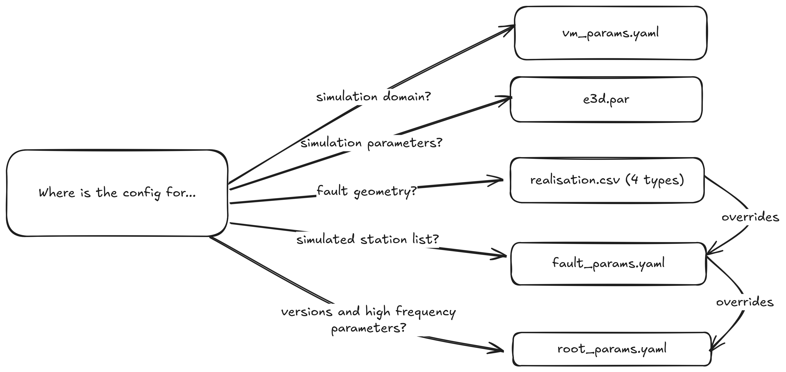
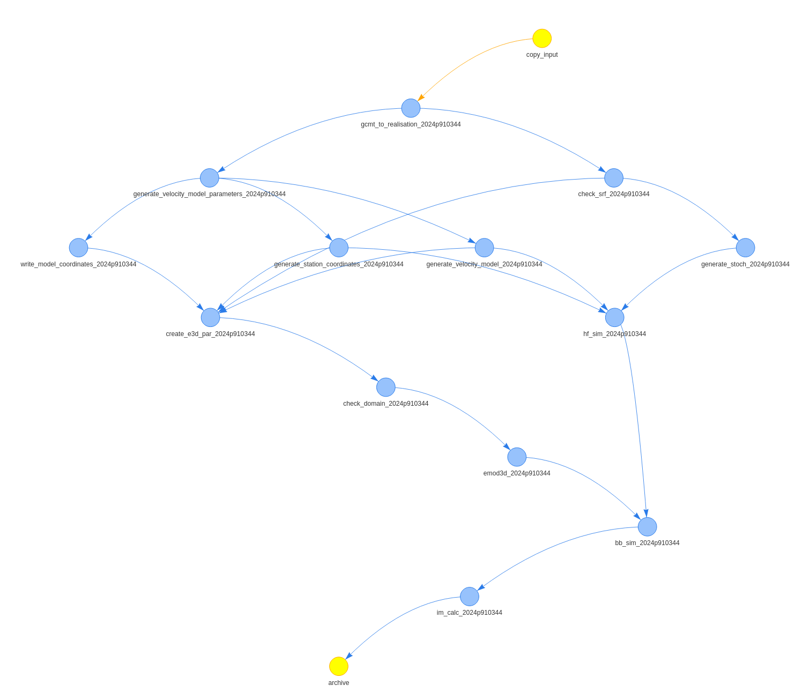

Modernising Earthquake Simulation Workflows
Created: 2025-02-10 Mon 15:50
Context
What We Do
- Support earthquake researchers at UC Civil and Natural Resources Engineering department.
- Primary focus: Ground motion simulation software.
Cybershake New Zealand
Researcher Outputs

Big Picture
- Cybershake NZ
- Better estimates of seismic hazard; inform EQC and disaster response.
- Researcher outputs
- Advance geoscience; improve Cybershake
The Old Simulation Stack
Basic Structure

The Problems
- Cybershake-centric, unfriendly to researchers.
- Entirely custom solutions for solved problems.
- Complex, brittle, hard to reproduce.
- So much legacy code!
Reproducing a Three-Year-Old Simulation
- Required our team lead one year,
- Involved special tools to re-derive input values,
- Ultimately impossible due to changing software.
The New Workflow
Container + Workflow + Realisation = Simulation
- Container: Reproducible software stack specification.
- Workflow: Declarative software execution control.
- Realisation: Declarative scientific parameter specification.
Containerisation
- Apptainer containers for software deployment.
- All workflow stages within containers.
- Archivable with future Cybershake versions.
Cylc Workflows
- Developed at NIWA.
- Supported on HPC by NeSI.
- Huge improvement for researcher UX.
- Composable for custom workflow.

Figure 1: Cylc TUI in Action!
One-File Simulation Specification

realisation.json
┐
├── metadata
│ ├── name: 3468575
│ ├── version: 1
│ ├── defaults_version: 24.2.2.2
│ └── tag: gcmt
├── sources
│ └── source_geometries [...]
├── rupture_propagation
│ ├── rupture_causality_tree [...]
│ ├── jump_points
│ ├── rakes [...]
│ ├── magnitudes [...]
│ └── hypocentre [...]
├── srf
│ ├── genslip_dt: 0.05
│ ├── genslip_version: 5.4.2
│ └── resolution: 0.2
├── seeds
│ ├── nshm_to_realisation_seed: 554010839
│ ├── rupture_propagation_seed: 1355831879
│ ├── genslip_seed: 906043042
[...]
Workflow Planner
- Workflow stages that compose together enables a flexible workflow planning tool.
- Skip or set a goal for any stage to generate custom research workflows!
$ plan-workflow 2024p910344 flow.cylc --source gcmt --goal im_calc \
--excluding realisation_to_srf --archiving hf_sim
You require the following files for your simulation:
┐
└── cylc-src
└── WORKFLOW_NAME
└── input
├── 2024p910344
│ ├── realisation.json
│ │ └── srf: Configuration for SRF generation.
│ └── realisation.srf: Contains the slip model for the realisation.
...

Hypothesis Testing
@given(st.integers(0, 50)) def test_prime_formula(n: int): """Test Euler's formula for primes.""" assert is_prime(n**2 + n + 41)
n = 40
@given(st.integers(0, 50))
def test_prime_formula(n: int):
> assert is_prime(n**2 + n + 41)
E assert False
- Used to test thousands of examples for critical scientific code.
- Potentially saves hundreds of thousands of wasted core-hours.
Key Takeaways
- Make your workflows declarative.
- Make your workflows composable.
- Automate your testing.
- Design for the least-savvy user.